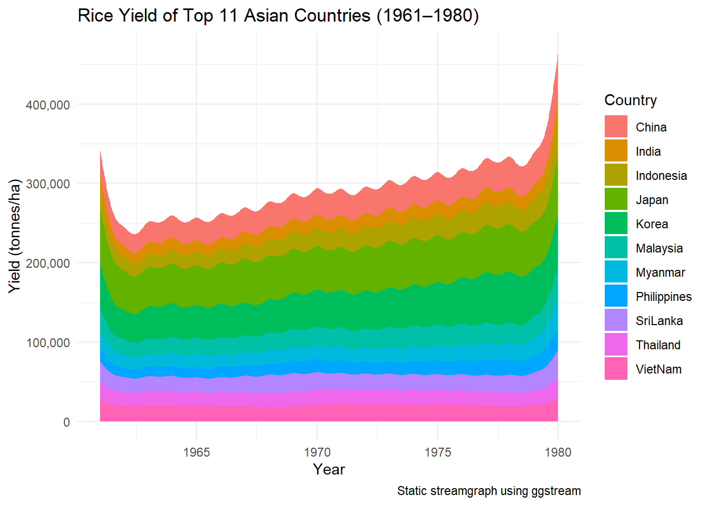
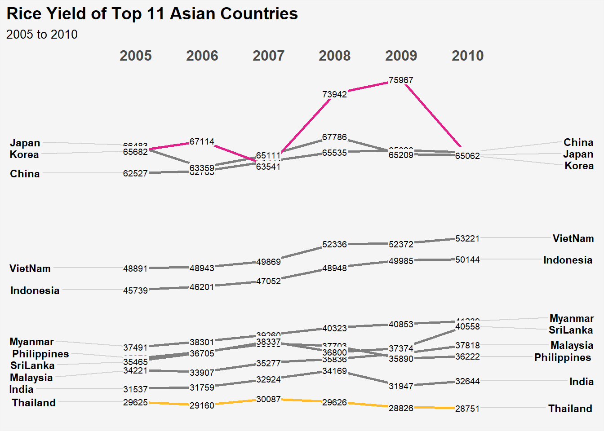

pacman::p_load(scales, viridis, lubridate, ggthemes,
gridExtra, readxl, knitr, data.table, ggHoriPlot, tidyverse)Hands-on Exercise 7
Visualising and Analysing Time-oriented Data
1. Learning Outcome
By the end of this hands-on exercise you will be able create the followings data visualisation by using R packages:
plotting a calender heatmap by using ggplot2 functions,
plotting a cycle plot by using ggplot2 function,
plotting a slopegraph
plotting a horizon chart
2. Getting Started
2.1 Importing Packages
NoteVery Important Note!
CGPfunctionswas removed from CRAN in late 2025 because it was not updated to pass some of CRAN’s routine automated checks.To fix this, we need to download it directly from the developer’s GitHub. However, you cannot install it right away because it relies on a dependency called
ggmosaic, which is also having version conflicts with newer R updates.The Fix: We just need to install both packages directly from their developers. Run the following code in your R console step-by-step to get everything working:
Code
# Install the missing dependency ('ggmosaic') first
remotes::install_github("haleyjeppson/ggmosaic")
# IMPORTANT: If R pauses and asks "Which would you like to update?", type 3 (for "None") in the console and press Enter.Code
# Install 'CGPfunctions'
remotes::install_github("ibecav/CGPfunctions")
# IMPORTANT: Again, if prompted to update other packages, type 3 and press Enter.
# Then load the package
library(CGPfunctions)2.2 Plotting Calendar Heatmap
In this section, I will learn how to plot a calender heatmap programmatically by using ggplot2 package.

By the end of this section, you will be able to:
plot a calender heatmap by using ggplot2 functions and extension,
to write function using R programming,
to derive specific date and time related field by using base R and lubridate packages
to perform data preparation task by using tidyr and dplyr packages.
2.3 The Data
For the purpose of this hands-on exercise, eventlog.csv file will be used. This data file consists of 199,999 rows of time-series cyber attack records by country.
2.3.1 Importing the data
attacks <- read_csv("data/eventlog.csv")2.3.2 Examining the data structure
It is always a good practice to examine the imported data frame before further analysis is performed.
For example, kable() can be used to review the structure of the imported data frame.
kable(head(attacks))| timestamp | source_country | tz |
|---|---|---|
| 2015-03-12 15:59:16 | CN | Asia/Shanghai |
| 2015-03-12 16:00:48 | FR | Europe/Paris |
| 2015-03-12 16:02:26 | CN | Asia/Shanghai |
| 2015-03-12 16:02:38 | US | America/Chicago |
| 2015-03-12 16:03:22 | CN | Asia/Shanghai |
| 2015-03-12 16:03:45 | CN | Asia/Shanghai |
There are three columns, namely timestamp, source_country and tz.
timestamp field stores date-time values in POSIXct format.
source_country field stores the source of the attack. It is in ISO 3166-1 alpha-2 country code.
tz field stores time zone of the source IP address.
2.3.3 Data Preparation
Step 1: Deriving weekday and hour of day fields
Before we can plot the calendar heatmap, two new fields namely wkday and hour need to be derived. In this step, we will write a function to perform the task.
make_hr_wkday <- function(ts, sc, tz) {
real_times <- ymd_hms(ts,
tz = tz[1],
quiet = TRUE)
dt <- data.table(source_country = sc,
wkday = weekdays(real_times),
hour = hour(real_times))
return(dt)
}
NoteNote
weekdays()is a base R function.
Step 2: Deriving the attacks tibble data frame
wkday_levels <- c('Saturday', 'Friday',
'Thursday', 'Wednesday',
'Tuesday', 'Monday',
'Sunday')
attacks <- attacks %>%
group_by(tz) %>%
do(make_hr_wkday(.$timestamp,
.$source_country,
.$tz)) %>%
ungroup() %>%
mutate(wkday = factor(
wkday, levels = wkday_levels),
hour = factor(
hour, levels = 0:23))
NoteNote
Beside extracting the necessary data into attacks data frame, mutate() of dplyr package is used to convert wkday and hour fields into factor so they’ll be ordered when plotting
Table below shows the tidy tibble table after processing
kable(head(attacks))| tz | source_country | wkday | hour |
|---|---|---|---|
| Africa/Cairo | BG | Saturday | 20 |
| Africa/Cairo | TW | Sunday | 6 |
| Africa/Cairo | TW | Sunday | 8 |
| Africa/Cairo | CN | Sunday | 11 |
| Africa/Cairo | US | Sunday | 15 |
| Africa/Cairo | CA | Monday | 11 |
3. Building the Calendar Heatmaps
Code
grouped <- attacks %>%
count(wkday, hour) %>%
ungroup() %>%
na.omit()
ggplot(grouped,
aes(hour,
wkday,
fill = n)) +
geom_tile(color = "white",
size = 0.1) +
theme_tufte(base_family = "Helvetica") +
coord_equal() +
scale_fill_gradient(name = "# of attacks",
low = "sky blue",
high = "dark blue") +
labs(x = NULL,
y = NULL,
title = "Attacks by weekday and time of day") +
theme(axis.ticks = element_blank(),
plot.title = element_text(hjust = 0.5),
legend.title = element_text(size = 8),
legend.text = element_text(size = 6) )
TipThings to learn from the code chunk
a tibble data table called grouped is derived by aggregating the attack by wkday and hour fields.
a new field called n is derived by using
group_by()andcount()functions.na.omit()is used to exclude missing value.geom_tile()is used to plot tiles (grids) at each x and y position.colorandsizearguments are used to specify the border color and line size of the tiles.theme_tufte()of ggthemes package is used to remove unnecessary chart junk. To learn which visual components of default ggplot2 have been excluded, you are encouraged to comment out this line to examine the default plot.coord_equal()is used to ensure the plot will have an aspect ratio of 1:1.scale_fill_gradient()function is used to creates a two colour gradient (low-high).
Then we can simply group the count by hour and wkday and plot it, since we know that we have values for every combination there’s no need to further preprocess the data.
4. Building Multiple Calendar Heatmaps
Challenge: Building multiple heatmaps for the top four countries with the highest number of attacks.
Step 1: Deriving attack by country object
In order to identify the top 4 countries with the highest number of attacks, you are required to do the followings:
count the number of attacks by country,
calculate the percent of attackes by country, and
save the results in a tibble data frame.
attacks_by_country <- count(
attacks, source_country) %>%
mutate(percent = percent(n/sum(n))) %>%
arrange(desc(n))Step 2: Preparing the tidy data frame
In this step, you are required to extract the attack records of the top 4 countries from attacks data frame and save the data in a new tibble data frame (i.e. top4_attacks).
top4 <- attacks_by_country$source_country[1:4] #<< Top 4 countries
summary(top4) Length Class Mode
4 character character Step 3: Plotting the Multiple Calendar Heatmap by using ggplot2 package.
top4 <- attacks_by_country$source_country[1:4]
top4_attacks <- attacks %>%
filter(source_country %in% top4) %>%
count(source_country, wkday, hour) %>%
ungroup() %>%
mutate(source_country = factor(
source_country, levels = top4)) %>%
na.omit()4.1 Plotting Multiple Calendar Heatmaps
ggplot(top4_attacks,
aes(hour,
wkday,
fill = n)) +
geom_tile(color = "white",
size = 0.1) +
theme_tufte(base_family = "Helvetica") +
coord_equal() +
scale_fill_gradient(name = "# of attacks",
low = "sky blue",
high = "dark blue") +
facet_wrap(~source_country, ncol = 2) +
labs(x = NULL, y = NULL,
title = "Attacks on top 4 countries by weekday and time of day") +
theme(axis.ticks = element_blank(),
axis.text.x = element_text(size = 7),
plot.title = element_text(hjust = 0.5),
legend.title = element_text(size = 8),
legend.text = element_text(size = 6) )
5. Plotting Cycle Plot
In this section, you will learn how to plot a cycle plot showing the time-series patterns and trend of visitor arrivals from Vietnam programmatically by using ggplot2 functions.
5.1 Step 1: Data Import
For the purpose of this hands-on exercise, arrivals_by_air.xlsx will be used.
The code chunk below imports arrivals_by_air.xlsx by using read_excel() of readxl package and save it as a tibble data frame called air.
air <- read_excel("data/arrivals_by_air.xlsx")5.2 Step 2: Deriving month and year fields
Next, two new fields called month and year are derived from Month-Year field.
air$month <- factor(month(air$`Month-Year`),
levels=1:12,
labels=month.abb,
ordered=TRUE)
air$year <- year(ymd(air$`Month-Year`))5.3 Step 3: Extracting the target country
Next, the code chunk below is use to extract data for the target country (i.e. Vietnam)
Vietnam <- air %>%
select(`Vietnam`,
month,
year) %>%
filter(year >= 2010)5.4 Step 4: Computing year average arrivals by month
The code chunk below uses group_by() and summarise() of dplyr to compute year average arrivals by month.
hline.data <- Vietnam %>%
group_by(month) %>%
summarise(avgvalue = mean(`Vietnam`))5.5 Step 5: Plotting the cycle plot
TipSlight modification to code
The X-Axis is all squished up in the original cycle plot, I have made some changes to plot it clearly
# Use existing integer year column
Vietnam$year_num <- Vietnam$year
# Plot
ggplot() +
geom_line(data = Vietnam,
aes(x = year_num,
y = Vietnam,
group = month),
colour = "black") +
geom_hline(data = hline.data,
aes(yintercept = avgvalue),
linetype = 6,
colour = "red",
size = 0.5) +
facet_grid(~month) +
labs(
title = "Visitor arrivals from Vietnam by air, Jan 2010–Dec 2019",
x = "",
y = "No. of Visitors"
) +
theme_tufte(base_family = "Helvetica") +
theme(
axis.text.x = element_blank(),
axis.ticks.x = element_blank()
)
6. Plotting Slopegraph
In this section I will learn how to plot a slopegraph by using R.
Before getting start, make sure that CGPfunctions has been installed and loaded onto R environment. Then, refer to Using newggslopegraph to learn more about the function. Lastly, read more about newggslopegraph() and its arguments by referring to this link.
6.1 Step 1: Data Import
Import the rice data set into R environment by using the code chunk below:
rice <- read_csv("data/rice.csv")6.2 Step 2: Plotting the slopegraph
Code
rice %>%
mutate(Year = factor(Year)) %>%
filter(Year %in% c(1961, 1980)) %>%
newggslopegraph(Year, Yield, Country,
Title = "Rice Yield of Top 11 Asian Counties",
SubTitle = "1961-1980",
Caption = "Prepared by: Nor Hendra")
TipThing to learn from the code chunk above
For effective data visualisation design, factor() is used convert the value type of Year field from numeric to factor.
6.3 Extras
6.3.1 Stream Graph
6.3.1.1 Loading Packages
ggstream will be used to plot the Stream Graph (aka Theme River). Although other packages are already loaded, I have included them in this pacman load to show what I will be using for this plot.
Code
# Install and load ggstream directly from GitHub
pacman::p_load_gh("davidsjoberg/ggstream")
# Then load the rest
pacman::p_load(dplyr,tidyr,ggplot2,scales)6.3.1.2 Plotting the Stream Graph
Code
rice_stream <- rice %>%
filter(Year >= 1961, Year <= 1980) %>%
group_by(Year, Country) %>%
summarise(Yield = sum(Yield, na.rm = TRUE), .groups = "drop")
top_countries <- rice_stream %>%
group_by(Country) %>%
summarise(total = sum(Yield)) %>%
arrange(desc(total)) %>%
slice(1:11) %>%
pull(Country)
rice_stream <- rice_stream %>% filter(Country %in% top_countries)
ggplot(rice_stream, aes(x = Year, y = Yield, fill = Country)) +
geom_stream(type = "ridge") +
scale_y_continuous(labels = label_comma()) +
labs(
title = "Rice Yield of Top 11 Asian Countries (1961–1980)",
x = "Year", y = "Yield (tonnes/ha)",
caption = "Static streamgraph using ggstream"
) +
theme_minimal()
6.3.2 Animated Bubble Plot
We have done this hands-on before, but let’s see what this rice data looks like on an animated bubble plot.
Notenframes adjustment
I first tried animate(p, nframes = 40, fps = 10, width = 600, height = 450) which looked much better but it seems like it took too long to render and was not saving. Hence, I changed it to nframes = 30 and used renderer = gifski_renderer to not preview. Afterwards, it was working fine. The 2 animation plots will be using this set up.
6.3.2.1 Loading Packages
Code
pacman::p_load(gganimate,ggplot2,dplyr,scales)6.3.2.2 The Plot
Code
bubble_data <- rice %>%
filter(Year >= 1961, Year <= 1980) %>%
group_by(Year, Country) %>%
summarise(Yield = mean(Yield, na.rm = TRUE), .groups = "drop") %>%
filter(!is.na(Yield))
bubble_data$Size <- 1
p <- ggplot(bubble_data, aes(x = Year, y = Yield, size = Size, color = Country)) +
geom_point(alpha = 0.7) +
scale_size(range = c(2, 12), guide = "none") +
scale_y_continuous(labels = label_comma()) +
labs(
title = 'Rice Yield by Country: {closest_state}',
x = 'Year', y = 'Yield (tonnes/ha)'
) +
theme_minimal() +
transition_states(Year, transition_length = 2, state_length = 1) +
ease_aes('linear')
animate(p, nframes = 30, renderer = gifski_renderer("rice_yield_bubble.gif"))
TipObservation
I don’t think this is useful, but from the animation - a line animation would be much better! So let’s try that.
6.3.3 Animating Line Graph Method
Code
# Prepare the data
line_data <- rice %>%
filter(Year >= 1961, Year <= 1980) %>%
group_by(Year, Country) %>%
summarise(Yield = mean(Yield, na.rm = TRUE), .groups = "drop") %>%
filter(!is.na(Yield))
# Optional: Keep only top 11 countries by total average yield over the years
top_countries <- line_data %>%
group_by(Country) %>%
summarise(total_yield = sum(Yield, na.rm = TRUE)) %>%
slice_max(order_by = total_yield, n = 11) %>%
pull(Country)
line_data <- line_data %>% filter(Country %in% top_countries)
# Plot
p <- ggplot(line_data, aes(x = Year, y = Yield, color = Country, group = Country)) +
geom_line(linewidth = 1.2) +
scale_y_continuous(labels = label_comma()) +
labs(
title = "Rice Yield by Country (1961–1980)",
subtitle = "Year: 1960 to 1980",
x = "Year", y = "Yield (tonnes per hectare)",
caption = "Animated line plot using gganimate"
) +
theme_minimal() +
theme(legend.position = "bottom") +
transition_reveal(Year)
# Animate
animate(p, nframes = 30, renderer = gifski_renderer("rice_yield.gif"))
6.3.4 BumpCharts in R
Code
remotes::install_github("davidsjoberg/ggbump")
library(ggbump)
rice %>%
mutate(Year = factor(Year)) %>%
filter(Year %in% c(2005, 2006, 2007, 2008, 2009, 2010)) %>%
ggplot(aes(x = Year,
y = Yield,
color = Country))+
geom_point(color = "#FFFFFF", size = 1) +
ggbump::geom_bump(mapping=aes(x = Year,
y = Yield,
group = Country
))+
labs(title = "Rice Yield of Top 11 Asian Countries") +
theme_minimal()+
theme(
plot.background = element_rect(fill = "#f5f5f5", color = "#f5f2f5"),
panel.background = element_rect(fill="#f5f5f5"))
6.3.5 LineColour
Code
rice %>%
mutate(Year = factor(Year)) %>%
filter(Year %in% c(2005, 2006, 2007, 2008, 2009, 2010)) %>%
newggslopegraph(Year, Yield, Country,
Title = "Rice Yield of Top 11 Asian Countries",
SubTitle = "2005 to 2010",
Caption = NULL,
LineColor = c("Korea" = "#e0218a", "Thailand" = "#FFBC2F"),
DataLabelFillColor = "#f5f5f5",) +
theme(
plot.background = element_rect(fill = "#f5f5f5", color = "#f5f2f5"),
panel.background = element_rect(fill="#f5f5f5")
) 